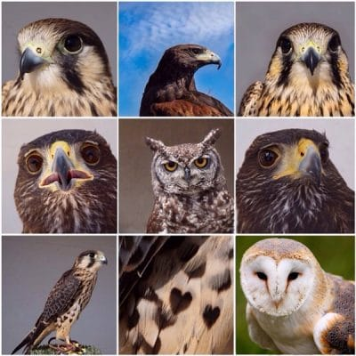

Las aves rapaces son aves depredadoras (Dieta carnivora). Poseen una gran variedad de adaptaciones corporales que las hacen excelentes cazadoras en el aire y que las diferencian claramente de otros grupos de aves.
Su visión, pico, garras y otros rasgos anatómicos les permiten ser cazadoras implacables capaces de rasgar la piel de sus presas. Se alimentan de vertebrados que cazan durante el día o la noche, dependiendo de la especies y grupo al que pertenezcan, aunque muchas especies, además, complementan su dieta consumiendo insectos y otras fuentes de alimento.

Habitat:
Las aves rapaces ocupan prácticamente todo tipo de hábitats. Hay especies que son típicas de áreas montañosas, especies de zonas esteparias o cerealistas (campiña) y aquellas que se desarrollan en ecosistemas forestales.
| Rapaces Rupicolas |
Rapaces Esteparias |
Rapaces Forestales |
| Colocan los huevos en las rocas |
Colocan los huevos en el suelo |
Colocan los huevos en los arboles |
Vision:
poseen una visión binocular y dependen del sentido de la vista para encontrar su alimento. En comparación con el tamaño de sus cabezas, sus ojos son muy grandes, representando aproximadamente un 15 % de su peso. Un dato curiosos es que los búhos tienen la capacidad de mover sus cabezas hasta 270 grados desde su eje frontal para tener una mayor visibilidad.
Audición:
en general las aves poseen un sistema auditivo muy desarrollado. En el caso de las aves rapaces es particularmente agudo, ya que, junto con otras técnicas, usan este sentido para localizar a sus potenciales presas, sobre todo las especies que cazan en la oscuridad.